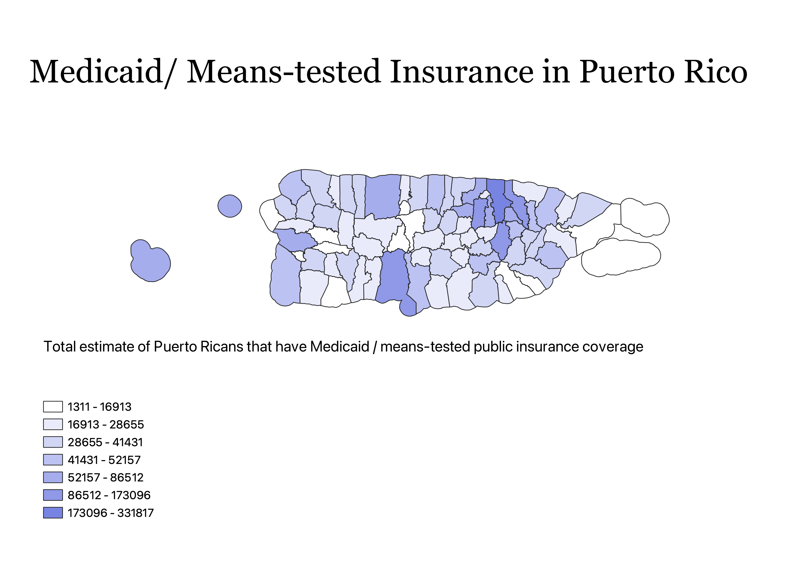

Homework 7: Census data choropleth
Natalie Yehle
This map displays the prevalence of Medicaid/ other means-tested insurance across municipalities in Puerto Rico. I want to go into health care after college and access to quality health coverage is very important to me. I was interested in the prevalence of state-managed health coverage in Puerto Rico because it is a territory, and not a state, of the U.S.

Data used for this project
CSV dataset
Link to shapefile